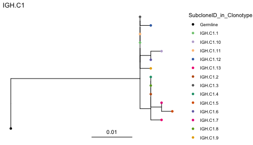

vignettes/IgScan_bulkngs_workflow.Rmd
IgScan_bulkngs_workflow.Rmd
library(IgScan)
library(ggplot2)
library(dplyr)
library(dowser)
outputDir <- tempfile("igscan_vignette_")
dir.create(outputDir)The IgScan bulk NGS workflow takes joint (overlapped) immunoglobulin sequences from different common input data formats (see next section for details) and it is compatible with multiple assays and protocols for the amplification of the immunoglobulin genes at the bulk level.
In this workflow, IG raw sequences are re-annotated with the IgBlast tool [Ye et al., Nucleic Acids Res, 2013] using the IMGT database, and are immunogenetically characterized with our custom algortihm.
Finally, IgScan provides a set of functions to help users cleaning their IG-NGS datasets of crossed contamination and enables exporting the results in the consensus AIRR format for the interaction with other packages such as Dowser or scRepertoire among others.
The IgScan annotation workflow is divided in three different steps:
In order to show the different functionalities of IgScan, here we
will run these two steps in a step-wise manner, although the complete
workflow is wrapped in the
IgScan::Run_IgScan_FullWorkflow() function, which takes the
same arguments.
Here we show an example of how IgScan works in two IGH-NGS samples from different individuals:
When using IgScan with raw bulk NGS data (paired-end FASTQ files), it is often beneficial to collapse identical reads—summing their total counts—to reduce redundancy and the overall number of input sequences.
To facilitate this, we provide an auxiliary preprocessing workflow that:
Merges overlapping paired-end reads using the FLASH tool.
Filters sequences by minimum length.
Collapses identical sequences while preserving their abundance.
To run the preprocessing workflow, first copy or clone the BulkNGS_preprocessing/
directory located within the IgScan package to a directory on your
system where you have permission to execute and write files.
You can then run the script using the following command:
bash ./BulkNGS_preprocessing/igscan_preprocess_bulkngs.sh sample_R1.fastq sample_R2.fastq output.fasta 300
This command will generate a collapsed FASTA file
(output.fasta) and print several FLASH statistics to the
standard output, including metrics related to the efficiency of
read-pair merging.
Important: the preprocessing step is not included within the IgScan R functions. This is something that is supposed to be run by the user prior to initiating the IgScan bulk NGS workflow.
This first part of the workflow can be executed by the
IgScan::Run_IgBlast_from_RawData() function. This function
checks and loads the input sequences and writes a fasta file that will
be passed as input to the IgBlast tool (when the input is a fasta file,
it will just use it as it is).
After that, if run_IgBlast_report = TRUE, an exploratory
data analysis of IgBlast outputs is performed and a report in PDF format
is generated in the outputDir, which can be of interest
when the level of clonality of the samples is unknown. The information
obtained from the report can be used by the user to adjust some
parameters in the following step (i.e. hc_similarity_cutoff
based on the distribution of CDR3 length or
cdr3_InDel_correction_mode if the samples are highly
polyclonal).
s1 <- pkg_path("extdata/igscan_test_bulkNGS_sample1.fasta")
s2 <- pkg_path("extdata/igscan_test_bulkNGS_sample2.fasta")
IgScan::Run_IgBlast_from_RawData(
sample_paths = c(s1, s2),
sample_labels = c("Sample1", "Sample2"),
input_format = "fasta",
data_type = "bulk",
annotate_C = TRUE,
outputDir = paste0(outputDir, "/IGSCAN_VIGNETTE_BULK/"), ## Change by your own outputDir
run_IgBlast_report = TRUE)Once this step is completed, the outputDir is created
(if it did not exist before running the command) and contains the
subdirectories fasta_inputs and igblast_outs.
If the function has run correctly, the igblast_outs
directory should contain three different files per sample:
*igblast_out.tsv file: containing the
re-annotation for each contig in the fasta_inputs.
*IgBlast_report.txt / *IgBlast_report.pdf: containing the summary report of the IgBlast outputs.
The IgBlast report file can give the user important information about the quality of the data (by looking at the IgBlast alignment scores) and the level of BCR clonality. To learn how to interpret the IgBlast report file see the Interpret IgBlast report file vingette.
Now that IgBlast outputs have been generated, they will be used as
input for the next step of the IgScan workflow, which can be executed by
the IgScan::Run_IgScan_Annotation() function. This function
will take the sequence re-annotation and return a list of IgScan
dataframes with the immunogenetic characterization of each sample.
For this part of the workflow, it is important to choose if the
analysis is performed in ‘single’ or ‘joint’ analysis_mode.
When analyzing related samples, such samples from the same individual,
in which it is plausible that the same clonotype is identified in both
samples, the ‘joint’ mode performs a consensus annotation across samples
in order to longitudinally track clonotypes.
In this example, since the samples come from different individuals,
we will proceed with the single analysis mode:
igscan_out <- IgScan::Run_IgScan_Annotation(
sample_labels = c("Sample1", "Sample2"),
outputDir = paste0(outputDir, "/IGSCAN_VIGNETTE_BULK/"),
input_format = "fasta",
analysis_mode = "single",
data_type = "bulk",
min_reads = 2,
material_type = "dna",
v_primer = "full_length",
remove_tmp = FALSE,
hc_similarity_cutoff = 0.2,
hc_mode = "average",
cdr3_mode = "nt",
cdr3_InDel_correction_mode = "soft_filter")In IG-NGS protocols, it is common to have crossed contamination between samples processed in the same batch or even sequenced in the same run. To deal with this issue, IgScan incorporates a function that flags contamination between samples coming from the same user-defined batch.
The principle of this function is to find sequences (or even whole
clonotypes) that are X times (default is 10 times) more frequent in a
sample in the batch than in others. Then, the user can decide if
removing these contaminated sequences or only flagging them. If
remove_contamination is set to TRUE, clonal
frequencies and clone identifiers are recalculated with the remaining
sequences.
merge_igscan_out <- do.call(rbind, igscan_out)
merge_igscan_out <- IgScan::filter_BCR_contam_bulk(igscan_data_frame = merge_igscan_out,
remove_contamination = FALSE)
merge_igscan_out[, c("SampleID", "VDJ_genes", "Junction_aa",
"Contamination_FLAG", "Contamination_Freq", "Contamination_Sample")]## SampleID VDJ_genes Junction_aa Contamination_FLAG Contamination_Freq Contamination_Sample
## 1 Sample1 IGHV1-3*01/IGHD6-19*01/IGHJ4*02 CAREQWLVQDYFDYW PASS NA <NA>
## 2 Sample1 IGHV1-3*01/IGHD6-19*01/IGHJ4*02 CAREQWLVQDYFDYW PASS NA <NA>
## 3 Sample1 IGHV2-70*01/IGHD3-10*01/IGHJ4*02 CARTLYYYGSGSTFDYW OUT_CLONOTYPE 100 Sample2
## 4 Sample2 IGHV2-70*01/IGHD3-10*01/IGHJ4*02 CARTLYYYGSGSTFDYW PASS NA <NA>
## 5 Sample2 IGHV2-70*01/IGHD3-10*01/IGHJ4*02 CARTLYYYGSGSTFDYW PASS NA <NA>As can be appreciated, after running this function, there is a whole clonotype (C2 in Sample1) that has been flagged as contamination from Sample2. In fact, it is found in a relative frequency of 0.25% in Sample1, while it accounts for the 100% of the sequences in Sample2. When we look at the VDJ genes and amino acid junction sequences, we will see that indeed they are exactly the same clone, and that the contamination has been correctly flagged. Thus, we can proceed to remove contaminated sequences and recalculate the clonal frequencies and IDs.
merge_igscan_out <- merge_igscan_out[merge_igscan_out$Contamination_FLAG == "PASS",]
merge_igscan_out <- recalculate_IDs_bulk(merge_igscan_out, group_col = "SampleID")If you open the merge_igscan_out data frame, you will
see that now the contaminated sequence is not there anymore, and that
each sample has only one clonotype that accounts for the 100% of the
reads respectively.
To facilitate interoperability with other immunogenetic tools and databases, IgScan allows users to export results in the standardized AIRR (Adaptive Immune Receptor Repertoire) format. This format ensures consistency, transparency, and compatibility across different analysis pipelines.
To export AIRR files, the user can run the function
IgScan::export_AIRR_format(), which converts all the
sequence annotation into AIRR format and also includes the possibility
to add pre-existing metadata by using the metadata
argument. Importantly, this function also supports single cell objects
with IgScan annotation metadata as input.
airr_object <- export_AIRR_format(object = merge_igscan_out,
dir = paste0(outputDir, "/IGSCAN_VIGNETTE_BULK/"),
fileName = "exportAIRR_testNGS.tsv",
germline_aln = "masked")The only parameter to consider—aside from input and output
settings—is the germline_aln option. This parameter accepts
two possible values:
masked: Uses the IgBlast germline alignment with masked (N) random nucleotides.
consensus: Uses the clonotype consensus germline sequence as the germline alignment, which does not include masked nucleotides. We recommend this option for downstream analyses, as the germline sequence is built considering all somatic sequences within the clonotype, helping to reduce potential alignment errors. However, it is important to note that this sequence is an assumption inferred by IgScan based on the closest-to-germline somatic sequence, and may not always perfectly reflect the true germline configuration of the CDR3 region.
Now, we can use this AIRR file to run other tools, such as the Dowser package which is part of the Immcantation workflow and is widely use to build BCR phylogenetic trees.
In order to show a more illustrative example, lets load an AIRR file coming from the IgScan annotation of a more complex bulk NGS dataset. The command used to generate the AIRR file was the following:
airr_object <- export_AIRR_format(object = IgScan_Df,
dir = paste0(outputDir, "/IGSCAN_VIGNETTE_BULK_AIRR/"),
fileName = FileName,
germline_aln = "consensus",
metadata = "SubcloneID_in_Clonotype") ## Added metadataFirst, we need to format the AIRR file following the Dowser manual:
## Load example AIRR file
airr_path <- pkg_path("extdata/igscan_test_AIRR_file_sample3.rds")
example_airr <- readRDS(airr_path)
## Format clones for phylogenetic inference
clones <- formatClones(example_airr, germ = "germline_alignment",
traits = "SubcloneID_in_Clonotype")
# Build maxmimum parsimony trees
trees <- getTrees(clones)
plots <- plotTrees(trees, tipsize=2, tips = "SubcloneID_in_Clonotype")Now, we can visualize, for instance, the phylogenetic tree of the dominant clonotype in the sample colored by subclone (VDJ nucleotide variants).
plots[[1]]